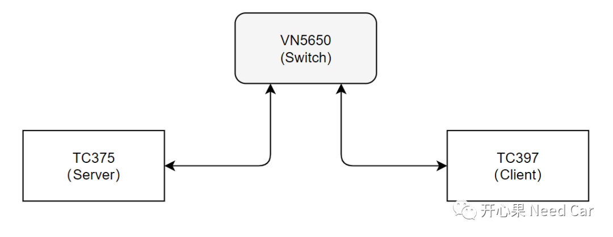
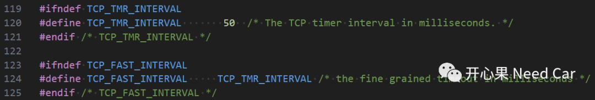
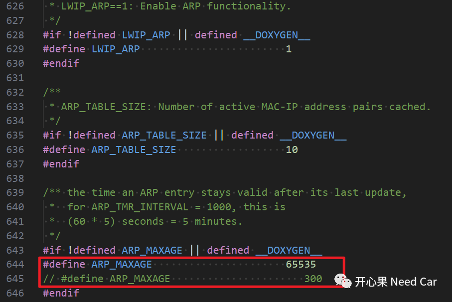
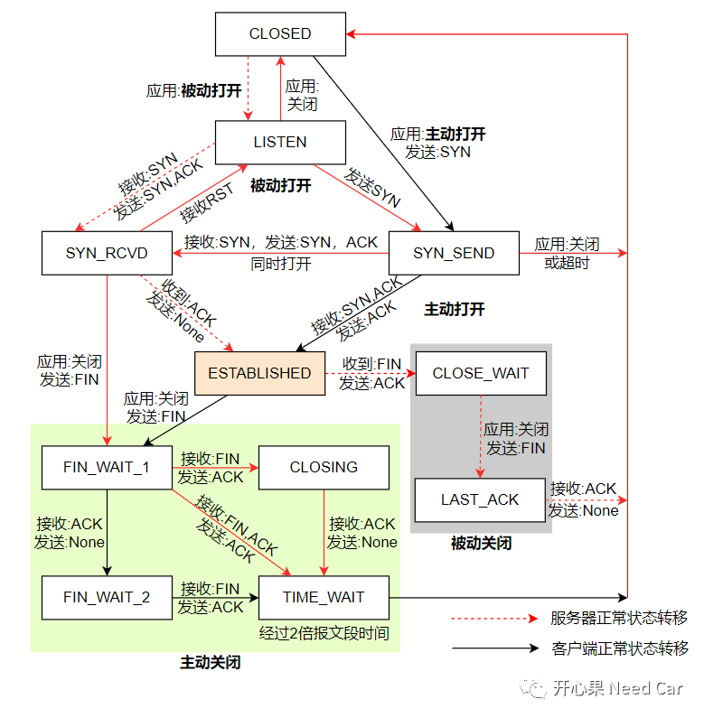
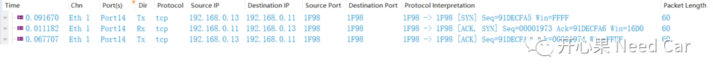
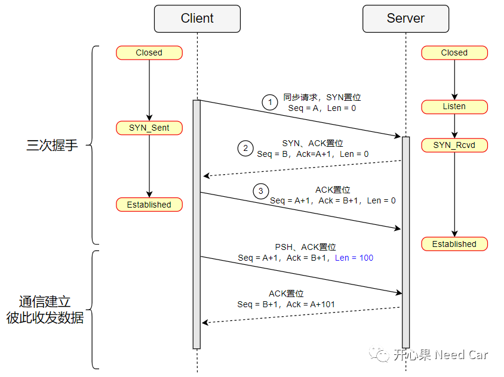
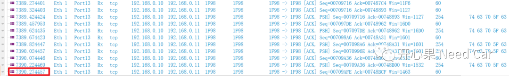

开心果 Need Car · 2023-08-21T08:56:00+08:00 · 微信原文
在《基于Tricore的UDP/TCP入门工程》一文中，留了一个小bug：TCP通信不稳定。为了不留遗憾，本文进行了修复，同时，对于Lwip的TCP Client实现的一些坑点做了梳理。文末给出工程源码，以便于需要的小伙伴更好的学习、理解TCP。
1、TCP Client实现坑点

实现过程中，先启动Server端，再启动Client端。即：让Server端先进入Listen（监听）模式，之后再让Client请求链接。
Client端启动时，需要确保网卡已经Link Up，否则，可能导致Client连接服务器失败。本文的处理如下（Cpu0_Main.c）：
......while (1){if((g_Lwip.netif.flags & NETIF_FLAG_LINK_UP) && (LinkUpFlag == FALSE)){LinkUpFlag = TRUE;tcp_client_init();}Ifx_Lwip_pollTimerFlags();Ifx_Lwip_pollReceiveFlags();}......
void tcp_client_init(void){struct tcp_pcb *tpcb;/* 服务器IP */ip_addr_t serverIp;IP4_ADDR(&serverIp, 192, 168, 0, 11);/* 创建tcp控制块 */tpcb = tcp_new();if (tpcb != NULL){err_t err;err = tcp_bind(tpcb, IP_ADDR_ANY, TCP_LOCAL_PORT);if (err == ERR_OK){/* 连接服务器 */tcp_connect(tpcb, &serverIp, TCP_REMOTE_PORT, tcp_client_connected);}else{memp_free(MEMP_TCP_PCB, tpcb);}}}static err_t tcp_client_connected(void *arg, struct tcp_pcb *tpcb, err_t err){LWIP_UNUSED_ARG(arg);LWIP_UNUSED_ARG(err);LWIP_DEBUGF(NETIF_DEBUG | LWIP_DBG_TRACE | LWIP_DBG_STATE, ("tcp_client_connected\r\n"));/* 注册接收回调函数 */tcp_recv(tpcb, tcp_client_recv);tcp_poll(tpcb, tcp_poll_send, 1);tcp_output(tpcb);}static err_t tcp_client_recv(void *arg, struct tcp_pcb *tpcb,struct pbuf *p, err_t err){LWIP_DEBUGF(NETIF_DEBUG | LWIP_DBG_TRACE | LWIP_DBG_STATE, ("tcp_client_recv\r\n"));if (p != NULL){struct pbuf *ptmp = p;while(ptmp != NULL){ptmp = p->next;}tcp_recved(tpcb, p->tot_len);/* 释放缓冲区数据 */pbuf_free(p);}else if (err == ERR_OK){LWIP_DEBUGF(NETIF_DEBUG | LWIP_DBG_TRACE | LWIP_DBG_STATE, ("tcp client close\r\n"));tcp_recved(tpcb, p->tot_len);return tcp_close(tpcb);}return ERR_OK;}static err_t tcp_poll_send(void *arg, struct tcp_pcb *tpcb){tcp_nagle_disable(tpcb);tcp_write(tpcb, "tcp_client", TCP_SEND_LEN, TCP_WRITE_FLAG_COPY);tcp_output(tpcb);return ERR_OK;}
解释：
使用tcp_poll(struct tcp_pcb *pcb, tcp_poll_fn poll, u8_t interval)接口注册一个周期callback function，在此回调中周期发送TCP数据。interval表示间隔，本文设置1，表示200ms。对于TCP的定时器间隔，可以修改tcp_priv.h文件中的宏：TCP_TMR_INTERVAL，eg：50。修改如下所示：

（三）ARP处理
默认情况下，Lwip的ARP协议使能，且每个ARP实体默认保持5min有效，即：5min后会再次发送ARP请求报文。为了保证TCP的通信稳定性，本文没有直接关闭TCP的宏LWIP_ARP，而是扩大了ARP_MAXAGE，延迟ARP的发送。修改文件opt.h，修改如下所示：

2、TCP三次握手理解
TCP的学习，很多时候就是在理解Server/Client的状态机跳转，这些状态机与"三次握手"、"四次挥手"有着千丝万缕关系。但是，这是学习TCP的必经之路。TCP的状态机如下所示：



3、源码链接
TCP Server端源码链接：
https://github.com/Kaixinguo2021/TC375_Tasking_Ethernet.git
TCP Client端源码链接：
https://github.com/Kaixinguo2021/Tasking_TC397_Client_Ethernet.git
如上代码，理论可以稳定通信＞18h，测试＞2h通信正常，如下所示：

往期精彩回顾
基于Hightec+TC375TP的RT-Thread移植详解